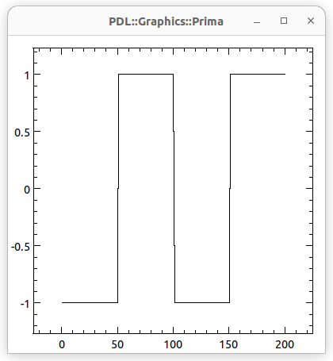
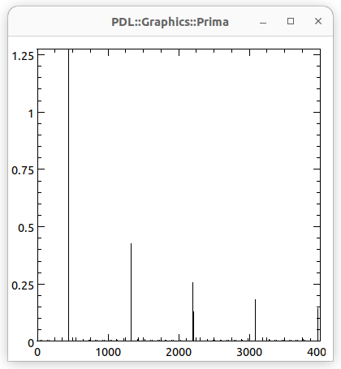
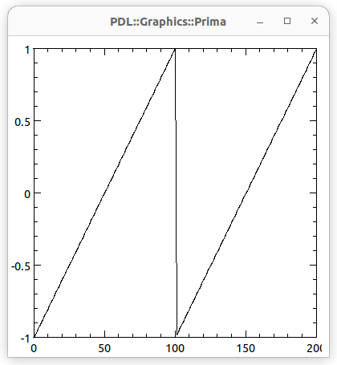
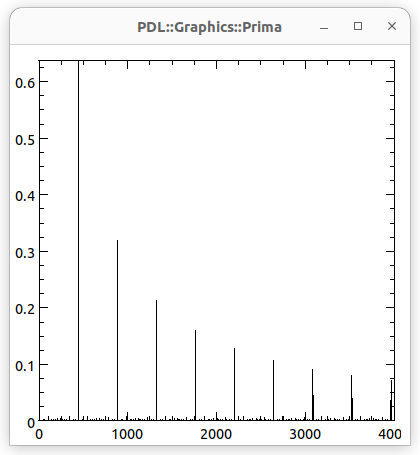
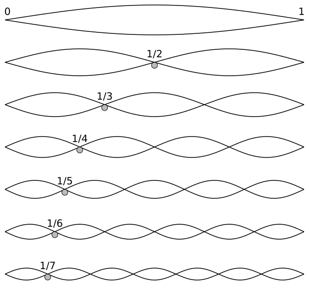
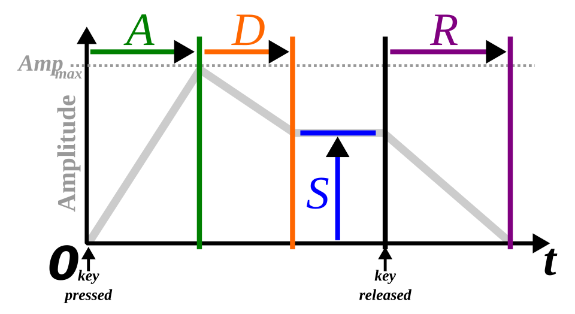

Sound from Scratch
May 2025
Sound is Pressure Change
Perl's Part in the Game
- Sound propagates through air as pressure changes
- Speakers create pressure changes from variations in voltage
- Sound cards create variations in voltage from data
Let's create the data with Perl
Our Data Format: LPCM
-
LPCM
= Linear Pulse Code Modulation
- Data are provided as discrete values (samples)
- Metadata:
- Number of samples per second, e.g. 44100 (CD) or 48000 (DVD)
- Binary format of the samples, e.g. 16-bit signed integer
- The
.wav file format is basically LPCM plus metadata
?
- Audio::Aoede is the current name of the packages
- Aoede is the Boeotian muse of voice and song
-
sequence is a constructor for PDL objects
-
sequence($n) creates a ndarray with $n
elements and values between 0 and $n-1
-
PDL overloads arithmetics and functions to operate on
each element of the ndarray
-
play is an interface to SoX
The play Method
(some details omitted)
?
-
short is a PDL data converter
-
Creates a PDL object of "C" shorts (16-bit signed integers)
-
Take care for the value range!
-
get_dataref is a PDL method which returns
a reference to a Perl scalar containing the binary data
- No need to
pack Perl scalars!
?
-
PDL::Graphics::Prima::Simple is a simple (!) way
for interactive data visualization
-
line_plot can work with just one PDL object
-
"interactive" not shown in the slides
-
slice is a PDL method to access parts of a ndarray
-
Can also be used to change parts of an ndarray
?
The spectrum method uses
PDL::FFT
(contained in the PDL distribution) to do Fourier
transformations
... where the fun happens
Let's try other periodic functions
 
More fun …
A function generating all overtones
 
Noise...
- ... is sort of a random signal
- ... has colors named after their power spectra:
- White noise has equal power per frequency interval
- Pink noise has equal power per halftone
-
There's also brown, blue and violet noise with
different power distributions
-
So, let's start with the spectrum and calculate the function
For Music: Keep it Simple
Add overtones

Polytonality
You can only add notes of equal length!
Improving...
Add a volume envelope

Envelope Parameters
-
ADSR = Attack, Decay, Sustain, Release
- Attack: How fast the sound reaches peak volume
- Decay: How fast the sound fades
- Sustain: What volume wil be sustained (a level, not a time)
- Release: How fast the sound dies down
More Features...
Effects
-
Vibrato - periodically change the frequency
-
Tremolo - periodically change the amplitude
-
Non-harmonic overtones
-
Non-periodic functions
Using a Data File
Sort of like MIDI, but plain text
Many Distractions...
- "Interactive" Sound
- Adds quite some complexity
-
"Can you do frequency analysis in real time?"
- "That needs some drums!"
-
Can be done, but is a bit tedious to do
from scratch.
-
"What about MIDI?"
-
There's some hacks, with help of CPAN modules.
Interactive Sound
-
Play sound while a key is pressed
...and immediately stop when it is released
-
Pause and resume playing
-
Needs an event loop with a timer
-
Hence the "source" interface:
$source->next_samples($n,$first)
Real-time Frequency Analysis
Also, sort of a music player...
Perlcussion
-
Noise, envelopes and optionally mix in sine waves
MIDI
-
...does not exactly make sound from scratch
-
Many CPAN modules write MIDI files:
MIDI::*
Music::Drummer
and many more
-
The MIDI sound is defined in SoundFont files
-
I have implemented some SF2 parameters (no modulators,
reverb, chorus...)
-
Here's an example from
MIDI::Chord::Guitar
:
Lessons Learned
-
Perl's core OO is sufficient for all my needs
-
Debugging support is missing. I cheat by falling back
to
Object::Pad
-
The maintainers of PDL and Prima are very helpful
-
Both have added stuff I could immediately use
- ChatGPT knows about
PDL::PP
-
It takes a careful review to fix its suggestions, though.
❮
❯